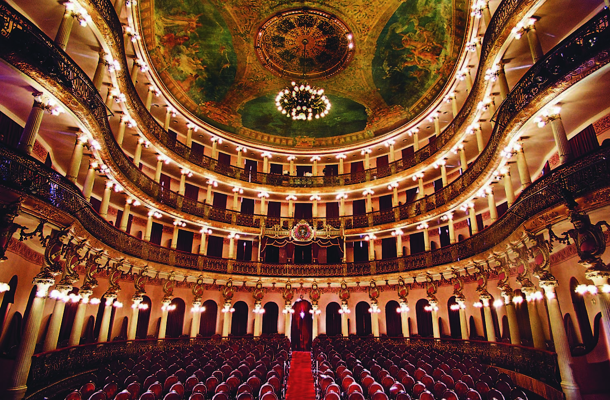

Fonte: Por Nayara Oliveira, Assessoria de Comunicação do Ministério do Turismo. Site do Gov.
Com a chegada dos portugueses, in 1500, o cenário nacional foi sendo modificado e tomando outra forma. A miscigenação dos povos e a interiorização das terras brasileiras trouxe uma nova composição e criou cidades com traços europeus. A região Norte, até então habitada pelos moradores originais, os indígenas, também começou a ver o reflexo dessa mistura.
As terras com exuberância natural e que são sede da maior floresta tropical do mundo, a floresta Amazônica, começou a receber espanhóis, por volta do século 15, que realizavam expedições na mata. Depois, os portugueses chegaram e passaram a defender as terras das invasões de outras nações da Europa. Todo esse processo trouxe ao Norte uma ocupação massiva. Borracha, madeira, minério, pecuária e agricultura: a região se consolidou como um importante propulsor da economia nacional, recebendo, para trabalhar, pessoas que buscavam uma vida nova, em especial os nordestinos.
O Norte é detentor de mais cidades que possuem conjuntos urbanos tombados (considerados núcleos históricos referência nacional) pelo Instituto do Patrimônio Histórico e Artístico Nacional, o Iphan, sendo eles agregadores de valores culturais e sociais relevantes para o desenvolvimento da pátria e do legado de uma nação. Vila Serra do Navio (AP), Manaus (AM), Belém (PA), Natividade (TO) e Porto Nacional (TO) são as cidades que compõem a lista do Iphan.
Os conjuntos urbanos tombados apresentam um patrimônio arquitetônico e artístico de origem diversa, mas a principal fonte de geração de riquezas que favoreceram a arquitetura local foi a exploração dos recursos naturais da Amazônia. No século 19, a borracha impulsionou esse movimento, o que tornou a região um eixo econômico e colocou o Brasil, mesmo que temporariamente, em uma posição de supremacia mundial na produção do látex.
BORRACHA - Manaus e Belém são dois exemplos que viveram o período de exploração e exportação da borracha, extraída dos seringais da Amazônia. De acordo com o Iphan, a economia gerada em Manaus possibilitou que autoridades da época trouxessem da Europa arquitetos e paisagistas para a execução de um plano urbanístico, que resultaria em uma cidade com perfil arquitetônico europeu em plena selva.
Nos anos 1900, a metrópole da borracha, como era conhecida a capital do Amazonas, abrigava uma população de 20 mil habitantes em suas calçadas com granito e pedras de lioz importadas de Portugal. A cidade contava, ainda, com praças e jardins, fontes, monumentos e o famoso Teatro Amazonas, além de hotéis, cassinos, estabelecimentos bancários, palacetes e toda a estrutura de uma cidade moderna.
Hoje, as belezas de Manaus fazem com que a região atraia turistas de todo mundo. O contraste entre natureza intocada e urbanismo histórico, aliado às delícias da culinária e à cultura rica e única dos povos indígenas faz com que a cidade seja um importante polo para o turismo.
Já Belém surgiu a partir da construção de uma fortificação, adquiriu características de cidade portuária e se transformou em um polo comercial. O porto de Belém era o local de onde seguiam para a Europa os recursos florestais e, no período de maior produção da borracha, a cidade foi integrada à economia do mercado mundial.
Em meados do século 19, com o comércio do látex, Belém viu acontecer a industrialização iniciada pela Inglaterra. Entre 1890 e 1920, a cidade viveu um ápice econômico e cultural, recebendo prédios luxuosos e toda a influência estrangeira, por meio da chegada de imigrantes atraídos pelas oportunidades de trabalho. Conforto e saneamento foram financiados pela economia favorável e, entre os primeiros conjuntos tombados, estão o Cemitério de Nossa Senhora da Soledade, a Praça Frei Caetano Brandão (ex-Largo da Sé) e o Mercado Ver o Peso.
O legado de toda essa beleza e riqueza pode ser visto atualmente na cidade, que, entre outros atrativos, leva o título de possuir uma das melhores gastronomias do Brasil, mérito dado por turistas estrangeiros e brasileiros.
OURO - Natividade e Porto Nacional pertenciam a Goiás até o ano de 1988, quando o estado foi desmembrado e deu origem a Tocantins. Natividade, como muitas cidades goianas, surgiu com a chegada dos bandeirantes paulistas, por meio da descoberta do ouro e da expansão da atividade mineradora nos séculos 18 e 19.
O conjunto arquitetônico de Natividade é formado por ruas estreitas e irregulares com casarões e igrejas, fazendo com que o turista viaje no tempo. Além disso, o viajante vai revisitar diferentes períodos da história ao “turistar” pela cidade, pois as fachadas das construções remetem a dois períodos econômicos distintos.
Em Porto Nacional, o turista também encontra uma cidade ligada à mineração. Além do ouro, o povoado se destacou por ser um porto do rio Tocantins e um ponto de comércio para negociantes que faziam a viagem em botes pelo rio e que traçavam a rota do ouro que seguia para a Europa. A área arquitetônica da cidade abrange cerca de 250 edificações, conjuntos de ruas, largos e praças. Em Porto Nacional, destacam-se as construções realizadas pelos freis dominicanos, como a Catedral das Mercês, além de espaços públicos e residências.
REVOLUÇÃO INDUSTRIAL - A Vila Serra do Navio, no Amapá, viveu tempos históricos da exploração do manganês. A cidade mantém as características originais do período e teve a proposta de tombamento, segundo o Iphan, debatida com os moradores há mais de 10 anos, pois o foco desse tombamento estava na recuperação da memória social local e na busca de soluções para resgatar as características que fazem da Vila uma cidade única.
Construído entre o final da década de 1950 e início dos anos 1960, o local foi criado para ser uma cidade nos moldes das que surgiram na Inglaterra durante a Revolução Industrial. Tratava-se de um núcleo urbano para trabalhadores e familiares da companhia que extraía minérios na região. A vila era moderna e com infraestrutura de saneamento básico, água tratada, energia elétrica, residências confortáveis, aliada a uma rede de atendimento sociocultural: escolas, hospital, cinema, áreas esportivas e recreativas destinadas. O legado desse momento sobreviveu e hoje o turista pode conhecer um pedacinho dessa parte histórica do Brasil.